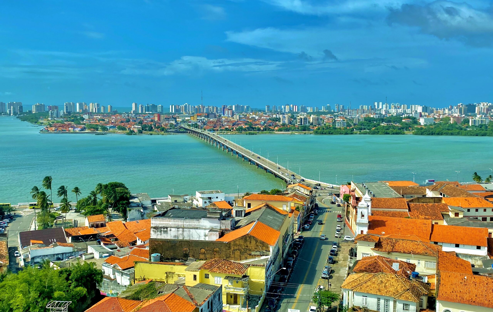

O Maranhão é um estado localizado na região Nordeste do Brasil, conhecido por suas belas praias, dunas e uma cultura vibrante. Sua capital, São Luís, é famosa por seu centro histórico colonial, que é Patrimônio Mundial da UNESCO, com muitas construções antigas e um charme único. O estado também é conhecido pelo Parque Nacional dos Lençóis Maranhenses, um cenário incrível de dunas de areia branca e lagoas de água cristalina que se formam durante a temporada de chuvas. A economia do Maranhão é baseada na agricultura, na extração de minerais e na indústria de petróleo. Além disso, a cultura maranhense é muito rica, com manifestações como o reggae, o bumba-meu-boi e festas tradicionais que refletem a diversidade do povo local. É um lugar cheio de belezas naturais e culturais!
